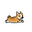

Why did we built Retriever?
Adam from our team realized that there was no way to request secrets from someone. Most people share passwords, but what if you could ask for a secret? What if it could also be done without a server in the middle. Shouldn’t secret sharing really be secret? I think we all say the news on LastPass.
This is why we developed Retriever, an open-source project to help users receive secrets and sensitive information. Retriever is a peer-to-peer secrets receiving platform that allows anyone to request secrets without a server needed in the middle.
Here’s what makes Retriever unique.
1. A Unique Way to Request Secrets
Interestingly, most services don't offer a way to request a secret from someone. Most secrets sharing happens with the person initiating the share has to have a password manager to do so. This system fills that gap. It allows users to send a link to someone from whom they wish to receive a secret. The recipient can then encrypt the secret and send back a new URL. The requester can then decrypt the secret in their browser, ensuring a seamless and secure exchange.
2. Open Source Doesn't Mean Open Hosting
Just because a project is open source doesn't mean it's hosted openly. This new system ensures that while the codebase is open for everyone to see and contribute to, the hosting remains secure, ensuring the integrity of the shared data. Additionally, retriever.corgea.io is actually hosted Github pages (do a CNAME check to see).
3. Eliminating the Middleman
Traditional methods of sharing secrets often involve a third-party server that orchestrates the transfer. While this might seem convenient, it poses a significant risk. Users have to trust that the third party will delete their data after the transfer. This new system ensures that data is transferred directly between the sender and receiver, reducing potential points of failure. Retriever has no data store to save or log any of the secrets or the parties sharing data.
4. Making URLs a secure way to share
One of the most significant challenges with current systems is the exposure of URLs. If someone gets hold of a secret URL, they essentially have access to the secret it contains. This new system acknowledges this flaw and encrypts the secret within the URL. Only the intended recipient, with the decryption key, can access the secret, ensuring an added layer of security.
5. No addons, plugins, or apps.
The system's backbone lies in its use of standard web cryptography. These are widely recognized for their robustness and security features. By leveraging these standards, the system ensures that the encryption and decryption processes are not only secure but also fast and efficient.
Who are we? 
We are a passionate bunch of engineers, designers, and product builders that like to tackle the most urgent and stimulating problems in security. In our prior roles, we designed, secured and built software products for the likes of Coupa, Autodesk, and PlanGrid.
A big thank you to Adam Bronte for authoring Retriever and Tamara for putting the finishing touches on usability and design.